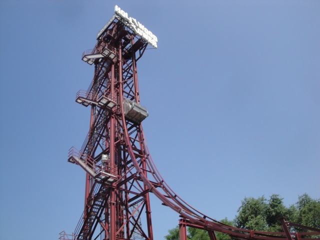
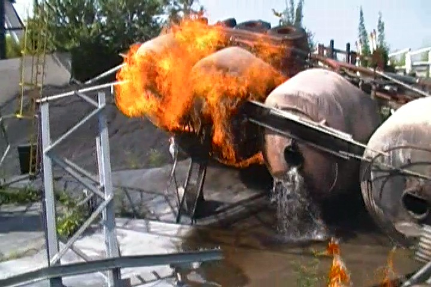

Movieland Studios is definetly one of the more interesting theme parks out there. Now from a first look, there's not much guessing as to what kind of a park this is. This is a knock off of Universal Studios Hollywood. It has all the classic trademarks of the Universal Studios Parks. It has a knock off Tram Tour, several rides themed to movies, and much more. Now this may shock a lot of people, but I actually prefer this park to Universal Studios Hollywood. Yes, I prefer the knock off to the original. Ok. So Why? What makes this park so special? Well, first off, I should mention that this is both a theme park and a water park, and where the theme park side is very similar to Universal Studios Hollywood, the water park side is very similar to the now defunct Original Wild Rivers (Again, I'd just like to say "F*CK YOU IRVINE COMP!!). Well, first off, both the theme park and water park tend to have this habit where they take all the saftey laws and copyright laws we have here in America, throw up their arms, and simply say "F*ck It!". There are so many things here that wouldn't make it in either of the parks I mentioned earlier. And this brings me to my other reason. The rides here simply so much better. My primary complaint with Universal Studios Hollywood is its lack of rides since the park essentially only has a small number of major rides. This park definetly has much more, containing a coaster, a couple cool and unique flats, some great dark rides, and more fun stuff. Yeah. Universal Studios Hollywood is catching them. But again, they have more cool stuff that America would NEVER allow. As for the water park, It's more difficult as I've gone on and praised the water slides of Wild Rivers to no end. But if there was any place to beat it, it'd be this place. Again, it doesn't have a huge selection of water slides and you wouldn't expect much, but again, considering how I mentioned there are less saftey standards here than in the U.S, they easily have my favorite water slide of all time, which I'll take greatly about later. But yeah, put these two factors together along with a fun charm and plenty of crazy and unique rides, and Movieland Studios is a really fun place to spend a day.
Here are the reviews of all the Flat Rides at Movieland Studios. The flat ride collection here may be small, but the flat rides they have are not only rare and unique rides, but they're also really good rides. Let's first talk about their star flat ride. Hollywood Tower. Now this may seem like an ordinary drop tower that's just a rip of Tower of Terror from the Disney Parks. A Tower of Terror rip off? Yes. An ordinary drop tower? Not anymore. You see, this is one of the few Intamin 1st Generation Drop Towers in existance. Seriously, I think the only other ones are at Dorney Park and a couple Japanese Parks. That's it. Which is a shame cause I really like these rides. True, they're not the biggest or the fastest, but they just shove you down. There's a reason I put Hollywood Tower on my Top 10 Drop Towers List. The other crazy flat ride here would be Tomb Raider, which like its Paramount cousins, is a Top Spin. Sort of. It's actually a Vekoma Wacky Flip, which is similar, except I prefer this for the most part. Yes, there's a certain top spin with a better program than this, but excluding that, this is my favorite. And as a unique ride, I definetly recommend checking it out. Apparently, there are a couple more flat rides here, but I'm not sure if they existed when I was there, and if they did, I didn't notice them. And on top of all that, they just seem like ordinary crappy flat rides. Which is a bummer. But hey, the two I talked about are enough for some fun. =)

If you have the chance to ride an Intamin 1st Generation Freefall, TAKE IT!!!
Dark Rides
While there aren't any "traditional" dark rides here, we have a very loose definition of dark ride since we count simulators and 3D Shows. But even then, Movieland Studios doesn't have a huge selection. The one dark ride (by our definition) they have here would be Terminator 5D. And that's a short of 3D Show combinded with a shooting dark ride, except you're standing up. Yeah. It's kind of a stretch, but I'm not sure what else to...F*ck It! I shouldn't be spending this much time debating definitions. I'm counting it. End of discussion. I just remember it being a weird ride, and apparently I got a good score. But really, I'd just recommend checking it out as its a really interesting ride that's certainly worth some time, even if I know that you're going to suck. Hey! Don't yell at me! I suck too!
Easily the strangest 3D Shooting Stand Up Dark Ride? Yeah, it's weird.
Water Rides
This is another one of those categories where we're sort of in blurred lines. But screw it. I'm just gonna talk about the rides. Let's talk about their most interesting water ride. U571 Submarine Simulator. Wait. Simulator? Aren't those dark rides? Yes, I usually do count those as dark rides, so you could call that a hybrid dark ride/water ride. But for the sake of what it does, it's a water ride. Why? Let's just say, there's a reason I call this "Drowning: The Ride". It's themed to a leaking submarine and water just GUSHES in. You will not be spared. You WILL get wet. You WILL be screwed with electronics that aren't waterproof. All right, now let's move onto the water ride they added since I last visited. Superjet KITT. This thing is Magma 2, only as a water ride. HOLY CRAP!! I WANT TO RIDE IT!! If you don't know what Magma 2 is, just keep reading. We'll discuss that down below. And finally, I've seen these photos of a log ride. However, this was NOT at the park when I visited. So it's either really new and was built after I visited the park, or it's an old ride that they bulldozed before I visited.
Those poor drowning fools.
Water Park
(Aqua Studios)
Here is the review of Aqua Studios. The included water park to Movieland Studios. Now, I didn't explore the water park is incredible detail, however, I did get on all of its star attractions and got a nice feel. It is exactly like Movieland Studios. The only downside I noticed were that the tubes were kind of hard. But hey. That's no big deal. It's still a really fun water park with some amazing water slides (you'll find these on our Top 10 Water Slides List). Definetly make sure you check it out.
The Major Waterslides
There is a link to a review of all the Major Waterslides at Aqualand Studios.
Ok, so the food here is just average. I know I rave on about how good the food is in Italian Parks, but this is my least favorite of the Italian Parks. It's not that it's bad, it's just...OK. Hell, when they were serving us lunch, they actually had one thing that made me jump with joy. Unlimited Refills. That may seem commonplace in America, but here in Europe, refills are almost unheard of. And considering how hot Italy gets in the summer, I was very grateful for this. However, this was for a private lunch, and you probably won't get this just visiting the park as a normal guest. Well, it'll fill you up.
You do not know how happy I was to see this in Italy.
Theming and Other Attractions
Here are the reviews of all the other stuff at Movieland Studios. And yeah, it's time to talk about Magma 2. This is sort of like the Tram Tour at Universal Studios Hollywood. Only this one does a ton of crazy things that would almost certainly be illegal in the United States. They may not show you all sorts of movie sets like they do on the Tram Tour, but they just go all out and take you on a crazy ride. They also have a Horror House that everyone seems to really like. I don't remember too much about it, but I do recall liking it. So definetly give that a spin. Yeah, both of those are rides, sort of. They're attractions, but I can't think of any other category to talk about them in. All right. Let's move on and talk about their Rambo Stunt Show. Yes, it's a rip off of Rambo, but man. I really liked this show. It actually had some good stunts, and of course, a couple of my friends were picked from the audience to partake in the show. So it was fun to watch them amongst all the madness, and keep in mind. They do pick 4 members of the audience for every show. So that's a very big plus. You just might get your chance to star in the show. Oh yeah, I forgot to talk about theming. They do have some copyrighted characters around the park that I'm sure aren't liscenced. But not a ton of other stuff. And trust me, there's going to be plenty of stuff to do here.

Explosions make any ride better.
Get picked for the Rambo Stunt Show and enjoy some complimentary anal sex.
In Conclusion
Movieland Studios is a very different kind of theme park. Yes, it is a rip off of Universal Studios Hollywood, but at the same time, it just has so much fun things to do. The ride collection may be small, but the ones that they have are just great. I love the Intamin 1st Generation Freefall, which is unique. They have a Vekoma Invertigo, which is pretty unique, their Tram Tour knock off is crazy and unique, and they're also expanding their own park. And that's not even getting into the water park, which has some of the best water slides around. I know this park gets overshadowed since a much larger, more traditional, full sized amusement park, Gardaland, is right down the street. I'm not even joking. You can literally see Movieland Studio's from the Observation Tower at Gardaland. So the general public is generally going to go for the more traditional theme park. Which is a bummer. I have nothing against Gardaland, it's a really fun park and I'll discuss that in my Gardaland Review, but Movieland Studios is really a very special and unique park. I know it's a rip off, but it has some fun attractions and just a ton to do. Please don't overlook it because you're too distracted by Gardaland or turned off by its lack of roller coasters. It's a really fun park that you should definetly give a chance.
Enthusiast FAQs.
*Are there kiddy coaster restrictions? - Movieland Studios doesn't have a kiddy coaster. However, if you're asking about that pathetic psuedo-credit, they allowed us to ride. I'm not sure if that was a special privelage since we were with a group, but come on dude. It's fake and it doesn't count.
Tips
*Definetly make sure to do Magma 2.
*Be careful with crowds. It wasn't busy when I visited, however, I have heard horror stories about operations on days where it is busy. I really hope they aren't true since I adore this park and had a fantastic visit. But it was kind of empty when I visited, so things could get much worse on busy days. I don't want to turn people off since I really like this park, but I have heard these stories and don't want anybody to shout "WHAT THE HELL!? WHY DIDN'T YOU MENTION THOSE HORRENDOUS OPERATIONS!!?" just in case the horror stories I've been told are true.
*Don't ignore the Water Park.
*If you decide to ride U571, get a locker for your stuff.